| 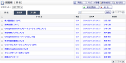 |
回覧板一覧 受信
・
送信済
・
ゴミ箱
回覧板を一覧表示します。 受信タブ、送信済タブ、ゴミ箱タブでそれぞれの表示切り替えができます。 |
|---|---|
| 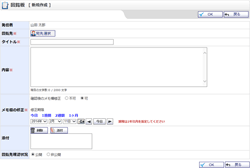 |
新規作成
・
確認
回覧板を作成します。 |
| 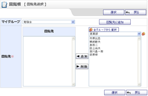 |
回覧先選択
回覧板を送る宛先を選択します。 |
| 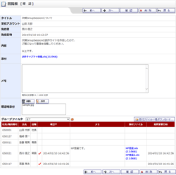 |
受信確認
・
受信確認（ゴミ箱）
受信した回覧板の内容を確認します。 |
| 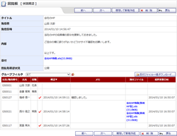 |
送信状況確認
・
送信状況確認（ゴミ箱）
送信した回覧板の内容を確認します。 回覧先のユーザが確認したか照会することができます。 |
| 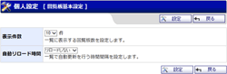 |
回覧板基本設定
回覧板一覧画面の自動リロードと、1ページに表示する回覧板件数、ショートメール通知の設定を行います。 |
| 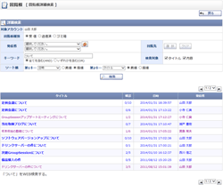 |
詳細検索
回覧板（受信・送信済・ゴミ箱）に詳細な条件を指定して検索を行います。 |
| 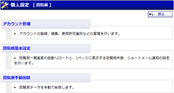 |
個人設定
回覧板個人設定のメニュー画面です。 |
| 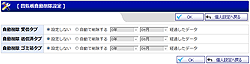 |
回覧板自動削除設定
・
確認（個人設定）
回覧板個人データの自動削除の設定を行います。 |
| 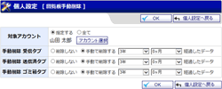 |
回覧板手動削除
・
確認（個人設定）
各ユーザの回覧板データの手動削除を行います。 |
| 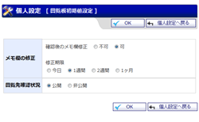 |
回覧板初期値設定
・
確認（個人設定）
各ユーザの回覧板新規作成時の初期値設定を行います。 |
| 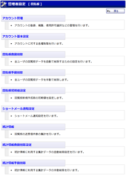 |
管理者設定
回覧板管理者設定のメニュー画面です。 |
| 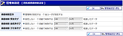 |
回覧板自動削除設定
・
確認
全ユーザの回覧板データの自動削除設定を行います。 |
| 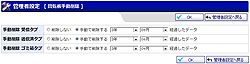 |
回覧板手動削除設定
・
確認
全ユーザの回覧板データの手動削除を行います。 |
| 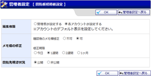 |
回覧板初期値設定
・
確認（管理者設定）
全ユーザの回覧板新規作成時の初期値設定を行います。 |
| 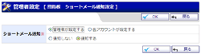 |
ショートメール通知設定
・
確認
回覧板を受信した場合、送信した回覧板を受信者が全員確認を行った場合にショートメールで通知を行うかどうか設定できます。 |
| 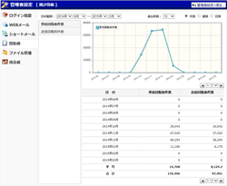 |
統計情報
回覧板の統計情報を確認することができます。 |
| 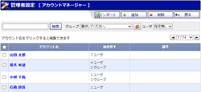 |
回覧板アカウントマネージャー
登録されているアカウントを閲覧することができます。 また、アカウントを検索することもできます。 |
| 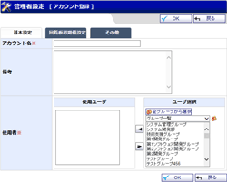 |
回覧板アカウント登録、編集 基本設定
・
回覧板初期値設定
・
その他(管理者設定)
登録されているアカウントを閲覧することができます。 また、アカウントを検索することもできます。 |
| 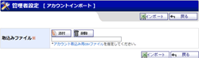 |
回覧板アカウントインポート
アカウントのインポートを行います。 |
| 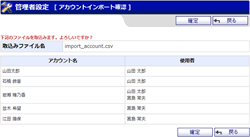 |
回覧板アカウントインポート確認
アカウントのインポートの確認を行います。 |
| 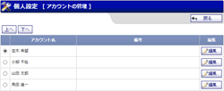 |
回覧板アカウント管理(個人設定)
アカウントの管理を行います。 |
| 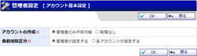 |
回覧板アカウント基本設定
アカウントの基本設定を行います。 |
| 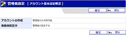 |
回覧板アカウント基本設定確認
アカウントの基本設定の確認を行います。 |